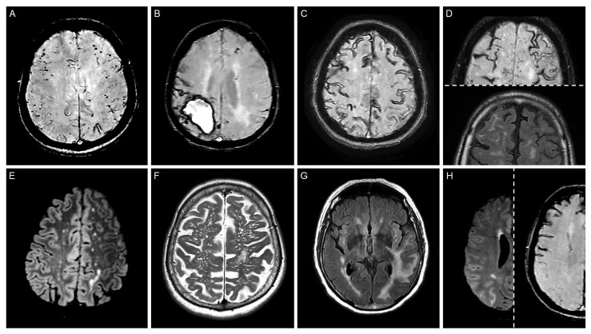
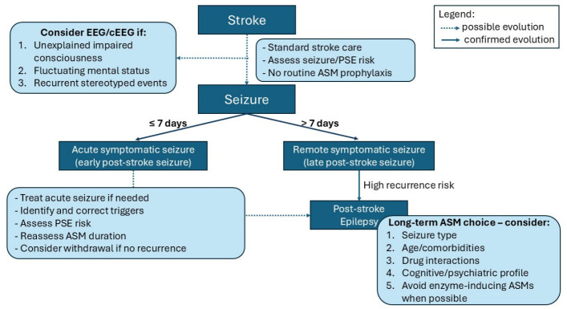

1868 — Động kinh sau xuất huyết não & sau nhồi máu não / Post-ICH and post-ischemic stroke epilepsy
Tags: pattern:ton-thuong-vo-nao pattern:xuat-huyet-nao vung:nao vung:vo-nao anatomy:vo-nao protocol:MRI-dong-kinh score:CAVE score:SeLECT
Mức chắc chắn (certainty): tổng hợp y văn (literature synthesis) — số liệu từ đoàn hệ CAVE gốc (Neurology 2014, PMID 24876089), nghiên cứu kiểm định CAVE/CAVE2 408 ca (BMC Neurol 2023, PMCID PMC10729474), mô hình SeLECT 1.200 + 1.169 ca (Lancet Neurol 2018, PMID 29413315), đoàn hệ trẻ 1.388 ca ODYSSEY (JAMA Neurol 2025, PMCID PMC11997857), đoàn hệ 300 ca xuất huyết thùy não dùng thuốc chống động kinh dự phòng (Neurocrit Care 2026, PMCID PMC13249779) và tổng quan 2026 (J Clin Med, PMCID PMC13410377). Không có ca do nhóm tự chụp.
Câu chốt: sau đột quỵ, câu hỏi hình ảnh không phải "có máu hay không" mà là "tổn thương có chạm VỎ NÃO không" — đó là biến số dự báo mạnh nhất và là một trong bốn điểm của CAVE. Ba con số quyết định: (1) khoảng 1/10 bệnh nhân xuất huyết não có cơn muộn; nguy cơ tích lũy 7,1% (1 năm) → 11,8% (5 năm), và CAVE 4 điểm = 46,2% so với 0,6% ở 0 điểm (PMID 24876089); (2) tổn thương vỏ não tăng nguy cơ OR 4,12 sau xuất huyết não và HR 8,20 ở người trẻ, HR 5,35 sau nhồi máu (PMC10729474, PMC11997857); (3) không dự phòng thuốc chống động kinh (ASM) thường quy cho mọi bệnh nhân — nhưng ở xuất huyết THÙY não nguy cơ cao, dự phòng gắn với giảm cơn sớm 21,6% → 6,3% (aOR 0,25) mà không cải thiện mRS 3 tháng (PMC13249779).
1. Tổng quan bệnh học – cơ chế hình ảnh (TẠI SAO)
1.1 Hai mốc thời gian, hai bệnh cảnh
- Cơn triệu chứng cấp (acute symptomatic seizure, ASyS): cơn xảy ra ≤ 7 ngày sau đột quỵ, do tổn thương cấp gây co giật — không phải động kinh, nhưng là yếu tố nguy cơ mạnh nhất cho cơn muộn.
- Động kinh sau đột quỵ (post-stroke epilepsy, PSE): cơn không kích thích (unprovoked) xảy ra > 7 ngày sau đột quỵ; thực hành thường tính khi có ≥ 2 cơn cách > 24 giờ, nhưng nhiều nghiên cứu dùng 1 cơn muộn làm định nghĩa vận hành — vì vậy đọc số liệu phải xem định nghĩa.
- Tần suất: ASyS gặp 11,0% (109/993) trong đoàn hệ Helsinki ICH; trong số sống qua 7 ngày, 9,2% (70/764) có cơn muộn (PMID 24876089). Với nhồi máu não, nguy cơ cơn muộn là 4% sau 1 năm và 8% sau 5 năm (PMID 29413315).
1.2 TẠI SAO cơn sớm và cơn muộn có cơ chế khác nhau
- Cơn sớm (giờ–ngày đầu): phá vỡ hàng rào máu–não, thrombin và hemoglobin/thoái giáng heme gây độc tính oxy hóa, rối loạn điện giải – chuyển hóa, mất ức chế GABA và dư thừa glutamate → tế bào thần kinh quá hưng phấn cấp. Hình ảnh tương ứng là máu tụ cấp/đông đặc cấp, phù quanh ổ — tức là tổn thương đang hoạt động, không phải sẹo.
- Cơn muộn (tuần–năm): hoại tử tế bào thần kinh, thay đổi mạng lưới sợi trục (axonal sprouting), tăng sinh mạch, viêm mạn, mất chọn lọc neuron ức chế → ổ động kinh (epileptogenesis). Hình ảnh tương ứng là não mềm hóa (encephalomalacia) + viền hemosiderin trên SWI + gliosis trên FLAIR — tức là sẹo đã hình thành.
- Hệ quả thực hành: càng nhiều vỏ não bị tổn thương, càng nhiều mạng lưới vỏ bị tái tổ chức → nguy cơ cơn muộn càng cao. Vì vậy "cortical involvement" trên CT/MRI là biến số hình ảnh quan trọng nhất, hơn cả thể tích ở một số mô hình.
1.3 Vì sao CT vẫn là cuộc thi đầu tiên (và đo gì)
- Máu tụ cấp tăng đậm độ (khoảng 50–70 HU, thay đổi theo hemoglobin), không ngấm thuốc, bờ rõ; máu cũ giảm đậm độ dần từ ngoại vi vào trong.
- Thể tích khối máu tụ tính bằng ABC/2: V (mL) = A × B × C / 2, với A = đường kính lớn nhất trên lát có khối lớn nhất, B = đường kính vuông góc, C = số lát × độ dày lát (cm). Ngưỡng dùng trong CAVE là > 10 mL.
- "Tổn thương vỏ não" (cortical involvement) = khối máu tụ/nồi máu chạm tới chất xám vỏ (không chỉ nằm ở chất trắng sâu). Đây là điểm 1 điểm trong CAVE; biến thể CAVE2 cho 2 điểm vì vỏ não dự báo mạnh hơn (C-statistic 0,73 → 0,74; PMC10729474).
- Vị trí thùy vs sâu: xuất huyết thùy (lobar) gắn với CAA ở người già, nguy cơ cơn sớm và tái phát cao hơn; xuất huyết sâu (putamen, thalamus, cầu não) ít cơn hơn nhưng không loại trừ.
1.4 Ngưỡng định lượng nằm lòng
| Đại lượng | Số liệu | Nguồn |
|---|---|---|
| ASyS trong xuất huyết não (≤ 7 ngày) | 11,0% (109/993) | PMID 24876089 |
| Cơn muộn ở người sống qua 7 ngày | 9,2% (70/764) | PMID 24876089 |
| Nguy cơ tích lũy cơn muộn sau xuất huyết não | 7,1% / 10,0% / 10,2% / 11,0% / 11,8% (1–5 năm) | PMID 24876089 |
| Nguy cơ theo CAVE 0–4 điểm | 0,6% / 3,6% / 9,8% / 34,8% / 46,2% | PMID 24876089 |
| C-statistic CAVE | 0,81 (phát triển), 0,69 (kiểm định) | PMID 24876089 |
| Cơn muộn sau xuất huyết não (đoàn hệ kiểm định 408 ca) | 12,7% (52/408); cortical OR 4,12; cơn sớm OR 3,78; tuổi > 65 OR 2,04; nam OR 2,09 | PMC10729474 |
| Nguy cơ theo CAVE ≥ 3 và CAVE2 ≥ 3 | 47,4% và 54,4% | PMC10729474 |
| Cơn muộn sau nhồi máu não | 4% (1 năm), 8% (5 năm) | PMID 29413315 |
| SeLECT 0 điểm so với 9 điểm | 0,7% so với 63% (1 năm); 1,3% so với 83% (5 năm); C 0,77 | PMID 29413315 |
| Người trẻ 18–49 tuổi (ODYSSEY, 1.388 ca) | PSE 4,1%; 5 năm: 3,7% (nhồi máu) so với 7,6% (xuất huyết); vỏ não HR 5,35 (nhồi máu), HR 8,20 (xuất huyết); cơn sớm HR 10,83 | PMC11997857 |
| Xuất huyết thùy não nguy cơ cao (300 ca) | cơn sớm 14,3%; không dự phòng 21,6% so với có dự phòng 6,3%; aOR 0,25 (0,11–0,54); không khác mRS 3 tháng | PMC13249779 |
| Thể tích nhồi máu | mỗi +10 mL → nguy cơ PSE +12% | PMC13145306 |
| Huyết khối xoang tĩnh mạch não | khoảng 10% PSE sau 2 năm (1.127 ca) | PMC13410377 |
| Thời gian dự phòng sau cơn | khởi đầu levetiracetam phổ biến nhất; valproate gắn tăng tử vong tim mạch/toàn bộ so với carbamazepine | PMC13410377 |
- Chưa rõ — cần tra: chưa có ngưỡng thể tích tuyệt đối dùng chung cho mọi mô hình (CAVE dùng > 10 mL, trong khi nghiên cứu thể tích nhồi máu dùng mỗi 10 mL là biến liên tục) → không được dùng một con số cho cả hai bệnh cảnh.
2. Mẫu hình + chẩn đoán phân biệt theo vị trí (Gamut)
- Mẫu hình cần nhận diện: tổn thương vỏ não + di chứng (máu tụ cấp hoặc não mềm hóa) ở bệnh nhân có cơn sau 7 ngày. Gamut chia theo cơ chế, không theo tên bệnh:
- Mạch máu – xuất huyết: xuất huyết thùy (CAA, tăng huyết áp, u chảy máu), xuất huyết sâu, xuất huyết chuyển dạng trong nhồi máu, huyết khối xoang có xuất huyết, máu tụ dưới màng cứng.
- Mạch máu – thiếu máu: nhồi máu vỏ não / lãnh thổ động mạch não giữa, nhồi máu ổ khuyết (ít cơn), bệnh mạch nhỏ lan tỏa.
- U: glioma thấp độ (thường ở vỏ, gây cơn là triệu chứng đầu), di căn, u mô thần kinh – thượng bì (DNET)/ganglioglioma ở trẻ.
- Nhiễm – viêm: áp-xe não, viêm não, lao, neurocysticercosis (vỏ, nhiều nang ở giai đoạn thoái triển).
- Chấn thương: dập não vỏ, máu tụ dưới màng cứng mạn.
- Chuyển hóa (hình ảnh bình thường): hạ đường huyết, hạ natri, urê huyết cao, cai rượu/benzodiazepine.
- Bệnh động kinh nguyên phát: xơ hóa hồi hải mã (hippocampal sclerosis), loạn sản vỏ não khu trú (focal cortical dysplasia) — không phải "sau đột quỵ".
- Gợi nhớ VITAMIN: Vascular, Infection, Trauma, Autoimmune, Metabolic, Idiopathic/genetic, Neoplasm.
3. Bảng so sánh phân biệt (ma trận đối chiếu)
| Thực thể (entity) | Hình ảnh điển hình | Chốt vào (rule-in) | Chốt loại (rule-out) | Gợi ý xác nhận |
|---|---|---|---|---|
| Cơn triệu chứng cấp sau xuất huyết não | Máu tụ tăng đậm độ cấp, phù quanh ổ, có thể tràn máu não thất | Cơn trong ≤ 7 ngày + ổ máu tụ cấp tính | Ổ não mềm hóa/hemosiderin cũ → là cơn muộn, không phải cấp | CT không cản quang; theo dõi 7 ngày |
| Động kinh sau xuất huyết não (PSE) | Xuất huyết thùy chạm vỏ, di chứng gliosis + viền hemosiderin trên SWI | Cortical involvement + cơn sớm + thể tích > 10 mL + tuổi < 65 (CAVE) | Xuất huyết sâu, không chạm vỏ → CAVE thấp | CT/MRI + CAVE; EEG khi nghi |
| Động kinh sau nhồi máu não | Nhồi máu vỏ não/lãnh thổ MCA, não mềm hóa, mất chất xám vỏ | Vỏ não + NIHSS cao + lớn động mạch + cơn sớm (SeLECT); thể tích +10 mL → +12% | Nhồi máu ổ khuyết sâu đơn thuần → nguy cơ rất thấp | MRI DWI/FLAIR; SeLECT |
| Xuất huyết chuyển dạng trong nhồi máu | Đốm tăng đậm độ trong vùng nhồi máu (HI1/HI2/PH1/PH2), thường sau tái thông | Máu trong lãnh thổ nhồi máu trên CT sau 24–48 giờ | Máu ngoài lãnh thổ → nghĩ nguyên nhân khác (CAA, u) | CT/MRI; phân độ ECASS |
| Bệnh mạch amyloid (CAA) | Xuất huyết thùy, vi xuất huyết vỏ dưới vỏ (CMB), siderosis vỏ (cSS), chảy máu dưới nhện lồi (cSAH) trên SWI | Xuất huyết thùy + cSS/CMB thùy theo tiêu chuẩn Boston v2.0 | Xuất huyết sâu + CMB hạch nền → bệnh mạch nhỏ tăng huyết áp | MRI SWI + T2/FLAIR |
| Huyết khối xoang tĩnh mạch có xuất huyết | Nhồi máu xuất huyết hai bên/không theo lãnh thổ động mạch, xoang tăng đậm độ trên CT, rỗng tín hiệu trên MRV | Vị trí không khớp lãnh thổ + xoang tắc trên MRV | Tổn thương đúng một lãnh thổ động mạch → loại | CT tĩnh mạch/MRV; D-dimer |
| U não (glioma thấp độ, di căn) | Khối ngấm thuốc, phù, có thể chảy máu trong u; glioma thấp độ không ngấm thuốc, T2 sáng, gây cơn | Khối liên tục qua nhiều lát + ngấm thuốc/đặc tính u | Chỉ di chứng mạch máu đúng lãnh thổ, không khối → loại | MRI 3T + sau tiêm; mô bệnh |
| Trạng thái động kinh không co giật (NCSE) | Hình ảnh thường bình thường hoặc chỉ di chứng cũ | EEG liên tục: phóng điện động kinh liên tục/kịch phát + rối loạn ý thức dao động | EEG bình thường trong cơn nghi ngờ → loại NCSE | cEEG 24–48 giờ |
4. Protocol chụp + hệ phân độ/điểm
4.1 Protocol hình ảnh theo thì
- Cấp (0–7 ngày): CT không cản quang, lát ≤ 5 mm — chẩn đoán xuất huyết, đo ABC/2, xác định chạm vỏ; CTA khi nghi phình/AVM/dò; CTV/MRV khi nghi huyết khối xoang. Không cần MRI thường quy chỉ để "tìm nguyên nhân cơn".
- Bán cấp – mạn (sau 7 ngày, khi có cơn muộn): MRI 3T protocol động kinh — 3D T1 1 mm (định lượng thể tích, đánh giá teo hồi hải mã), T2, FLAIR (gliosis, não mềm hóa), SWI (hemosiderin, CMB, cSS), DWI/ADC (tổn thương mới), T1 sau tiêm khi nghi u/áp-xe.
- Đo thể tích: ABC/2 với A, B đo trên lát lớn nhất, C = số lát chứa máu × độ dày; loại trừ não thất và phần máu dưới màng cứng. Với nhồi máu, dùng thể tích DWI (phần mềm bán tự động) — mỗi 10 mL tăng 12% nguy cơ PSE (PMC13145306).
4.2 Hai thang điểm dùng trong thực hành
CAVE (xuất huyết não, 0–4 điểm) — mỗi yếu tố 1 điểm: Cortical involvement, Age < 65, **V**olume > 10 mL, Early seizure ≤ 7 ngày. Nguy cơ cơn muộn 0,6% / 3,6% / 9,8% / 34,8% / 46,2% ứng với 0–4 điểm.
CAVE2 — vỏ não tính 2 điểm; nguy cơ theo điểm ≤ 1 / 2 / ≥ 3 là 4,6% / 18,3% / 54,4%; C-statistic 0,74 so với 0,73 của CAVE (PMC10729474).
SeLECT (nhồi máu não, 0–9 điểm) — Severity (NIHSS), Large-artery atherosclerosis, Early seizure, Cortical involvement, Territory MCA. 0 điểm = 0,7%/1 năm, 9 điểm = 63%/1 năm (83%/5 năm); C 0,77 (PMID 29413315). Biến thể SeLECT 2.0 tách cơn sớm ngắn khỏi trạng thái động kinh cấp (tiên lượng nặng hơn).
flowchart TD
A[Đột quỵ có cơn co giật] --> B{Cơn trong 7 ngày đầu?}
B -->|Có| C[Cơn triệu chứng cấp: điều trị cơn, tìm yếu tố thuận lợi]
C --> D[Không dự phòng dài hạn; theo dõi sát]
B -->|Không| E[Cơn muộn: xác định động kinh sau đột quỵ]
E --> F{Xuất huyết hay nhồi máu?}
F -->|Xuất huyết| G[Tính CAVE: vỏ, tuổi dưới 65, hơn 10 mL, cơn sớm]
F -->|Nhồi máu| H[Tính SeLECT: NIHSS, xơ vữa lớn, cơn sớm, vỏ, lãnh thổ MCA]
G --> I{CAVE từ 3 điểm?}
H --> J{SeLECT từ 4 điểm?}
I -->|Có| K[Theo dõi sát, hạ ngưỡng EEG, tư vấn nguy cơ]
J -->|Có| K
I -->|Không| L[Tư vấn nguy cơ thấp, theo dõi thường quy]
J -->|Không| L
K --> M[Có cơn lâm sàng/điện não đồ: khởi trị ASM dài hạn]
4.3 Điều trị dự phòng: điều gì đã có bằng chứng
- Không dự phòng ASM tiên phát cho mọi bệnh nhân đột quỵ — dữ liệu hiện có không chứng minh ASM ngăn được PSE (PMC13410377).
- Ngoại lệ đang được nghiên cứu: ở xuất huyết THÙY não nguy cơ cao (thùy + tuổi < 65 + thể tích ≥ 10 mL), dự phòng gắn với giảm cơn sớm 21,6% → 6,3% (aOR 0,25; 0,11–0,54; p = 0,0005) nhưng không cải thiện mRS 3 tháng — đây là dữ liệu quan sát, chưa phải chỉ định chính thức (PMC13249779).
- Khi đã có cơn muộn: khởi trị ASM dài hạn, chọn theo loại cơn, tuổi, bệnh nền, tương tác thuốc; levetiracetam được dùng khởi đầu phổ biến nhất trong dữ liệu Thụy Điển; tránh ASM cảm ứng enzym khi bệnh nhân dùng DOAC/statin; valproate gắn tăng tử vong tim mạch (PMC13410377).
- Theo dõi: EEG khi ý thức dao động, cơn lặng lẽ, hoặc sau cơn sớm; cEEG khi nghi NCSE (bài 1987).
5. Biến thể bình thường và cạm bẫy
- Đọc "chạm vỏ" quá tay: khối máu tụ sát vỏ nhưng còn lớp chất trắng giữa u và vỏ không tính là cortical involvement; ngược lại, máu tụ thùy nhỏ nhưng phá vỏ vẫn tính — luôn đọc nhiều mặt phẳng, không chỉ lát lớn nhất.
- Đo thể tích sai: gộp máu trong não thất hoặc dịch dưới màng cứng vào khối; đo A/B trên lát khác nhau; quên nhân độ dày lát → CAVE bị đẩy lên ngưỡng > 10 mL oan.
- Cơn do chuyển hóa: hạ đường huyết, hạ natri, urê cao, cai rượu có thể gây cơn với hình ảnh bình thường hoặc chỉ di chứng cũ — đừng gán PSE trước khi sửa điện giải/đường huyết.
- CAA: "siderosis giả" và nhiễu SWI: mạch máu nền sọ, vôi hóa, khí tạo đốm tối trên SWI; cSS thật nằm trên bề mặt hồi não và đi kèm CMB thùy. Ở người già có xuất huyết thùy, SWI là chuỗi bắt buộc để phân biệt CAA với bệnh mạch nhỏ tăng huyết áp.
- "Cơn lúc chụp CT": bệnh nhân co giật trong lúc chụp → giả ảnh do cử động giả xuất huyết/SAH; chụp lại hoặc đối chiếu MRI trước khi kết luận.
- Bẫy thỏa mãn tìm kiếm: thấy ổ xuất huyết cũ rồi dừng, bỏ u glioma thấp độ hoặc loạn sản vỏ ở bệnh nhân trẻ có cơn — cần MRI 3T có T1 1 mm + FLAIR trước khi kết luận "di chứng mạch máu".
- ASyS không phải động kinh nhưng không được xem nhẹ: HR 10,83 cho cơn muộn sau nhồi máu ở người trẻ (PMC11997857) — đây là lý do phải hẹn theo dõi, dù chưa dùng thuốc dài hạn.
6. Tự lượng giá — Blind Quiz
Ca 1 — Nam 72 tuổi, cơn co giật cục bộ hóa toàn thể 1 năm sau "tai biến"; MRI sọ có SWI. Panel B là tổn thương đang được hỏi.

- Gợi ý: không tăng huyết áp, không rối loạn đông máu; tổn thương thùy đỉnh phải, xung quanh có đường tối mảnh trên bề mặt hồi não và vài đốm tối nhỏ ở thùy trán trái.
- Câu hỏi: mô tả panel B? Ba chẩn đoán phân biệt? Dấu hiệu nào giúp phân tầng nguy cơ cơn tái phát?
Bấm để hiện đáp án (findings + chẩn đoán)
- Dấu hiệu: (B) xuất huyết thùy đỉnh phải giai đoạn bán cấp muộn trên SWI, kèm siderosis vỏ (cSS) quanh ổ và vi xuất huyết (CMB) thùy trái; (C) cSS lan tỏa dạng đường tối theo hồi não; (A) CMB thùy đơn thuần.
- Chẩn đoán: xuất huyết thùy do bệnh mạch amyloid (CAA) — tổn thương chạm vỏ nên nguy cơ cơn muộn cao (cortical involvement HR 8,20 ở người trẻ; OR 4,12 ở người lớn), và cSS/CMB thùy làm tăng nguy cơ tái phát xuất huyết.
- Phân biệt: bệnh mạch nhỏ tăng huyết áp (xuất huyết sâu, CMB hạch nền), u chảy máu (khối ngấm thuốc), huyết khối xoang (vị trí không theo lãnh thổ, xoang tắc trên MRV).
- Phân tầng: tính CAVE (vỏ + tuổi + thể tích + cơn sớm) và theo dõi EEG nếu ý thức dao động.
- Nguồn ảnh: Life 2025 (PMC12565732), Hình 2, CC BY 4.0.
Ca 2 — Cùng bệnh nhân, câu hỏi quyết định: có nên dùng thuốc chống động kinh dự phòng ngay khi chưa có cơn?

- Câu hỏi: đọc sơ đồ; khi nào không dự phòng? Khi nào khởi trị dài hạn? Ba yếu tố cần cân nhắc khi chọn thuốc?
Bấm để hiện đáp án
- Không dự phòng thường quy cho mọi bệnh nhân đột quỵ, kể cả khi CAVE/SeLECT cao — điểm số dùng để theo dõi sát, hạ ngưỡng EEG, tư vấn, không phải chỉ định thuốc tự động.
- Khởi trị dài hạn khi có cơn muộn (động kinh sau đột quỵ) hoặc cơn lâm sàng/điện não đồ rõ; sau cơn sớm đơn thuần, cân nhắc ngắn hạn rồi đánh giá lại.
- Chọn thuốc: loại cơn, tuổi/bệnh nền, tương tác thuốc (tránh ASM cảm ứng enzym với DOAC/statin), hồ sơ nhận thức – tâm thần; levetiracetam hay dùng trong giai đoạn cấp, lamotrigine có dữ liệu tử vong thấp hơn carbamazepine, valproate gắn tăng tử vong tim mạch.
- Nguồn ảnh: J Clin Med 2026 (PMC13410377), Hình 2, CC BY 4.0.
Không dùng để chẩn đoán độc lập khi chưa có người hướng dẫn.
Bài liên quan chéo
- 211 – Đột quỵ não: nhồi máu và phân vùng lãnh thổ
- 212 – Xuất huyết dưới nhện: phân độ và biến chứng
- 1948 – Co giật & động kinh sau huyết khối xoang tĩnh mạch não
- 1987 – Trạng thái động kinh không co giật sau đột quỵ ở trẻ
Ảnh
1868_dong-kinh-sau-dot-quy_MRI_PMC12565732-fig2.jpg— dấu hiệu MRI của CAA (CMB thùy, xuất huyết thùy, cSS, cSAH), PMC12565732, CC BY 4.0.1868_dong-kinh-sau-dot-quy_SoDo_PMC13410377-fig2.jpg— khung xử lý cơn sau đột quỵ, PMC13410377, CC BY 4.0.